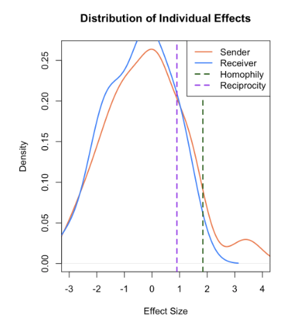
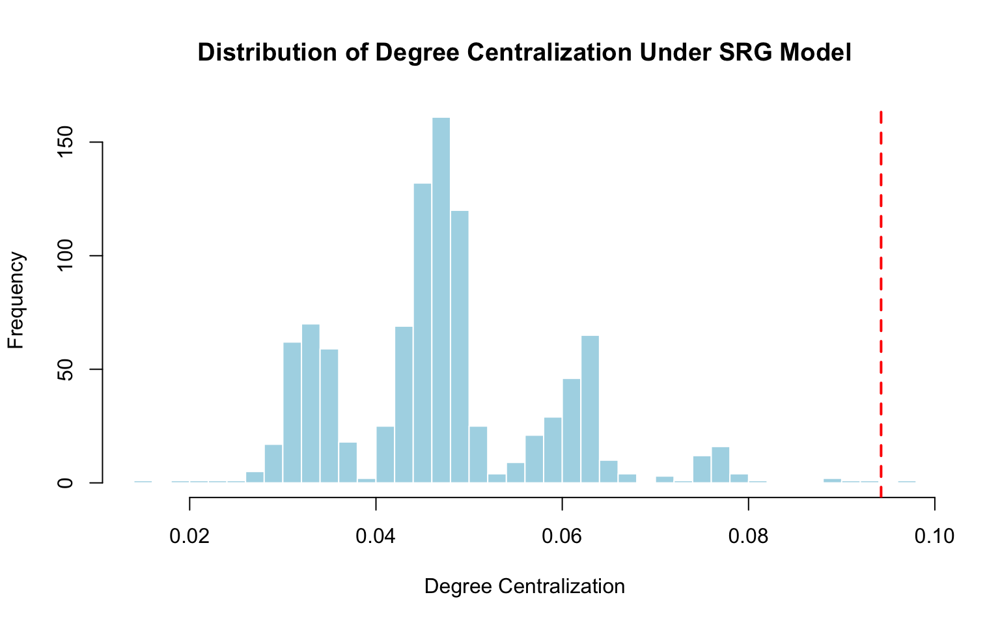
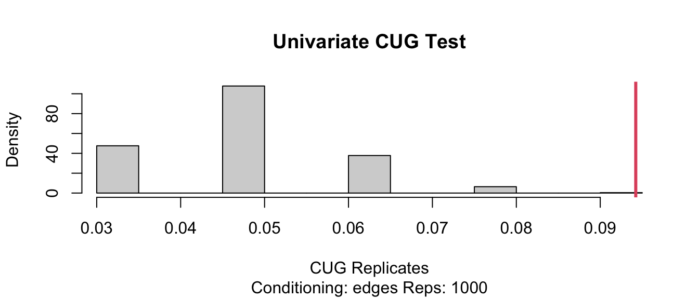
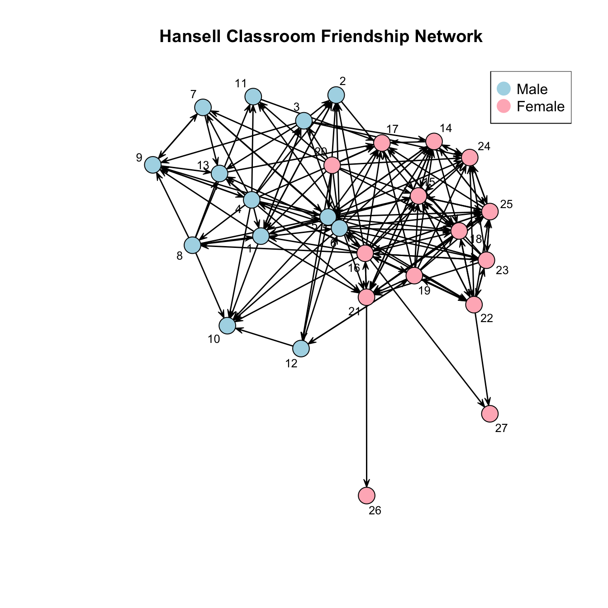
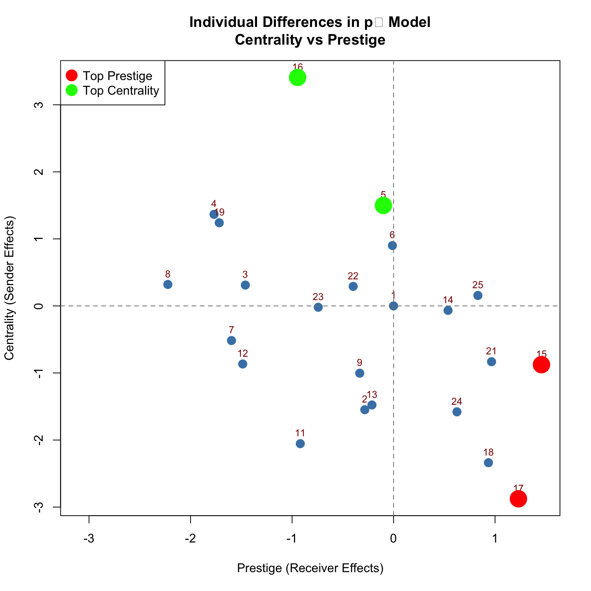
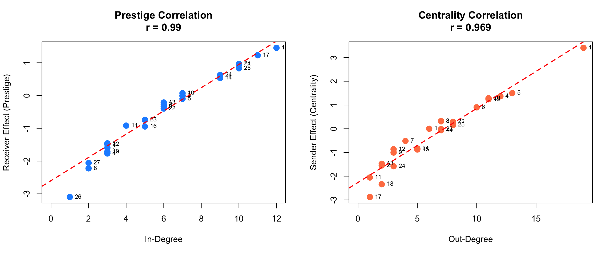
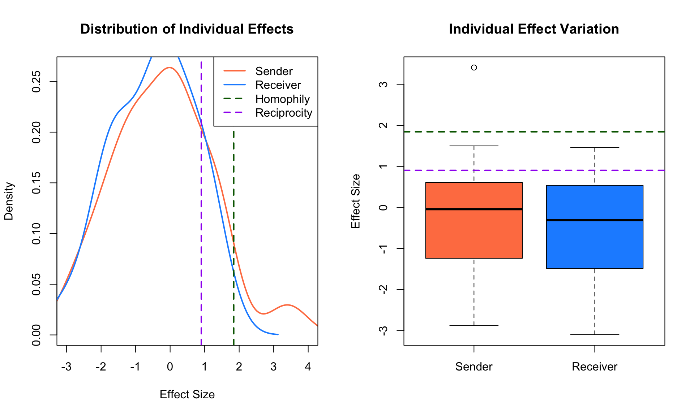

rm(list = ls())
library(sna) # Social network analysis
library(network) # Network objects
library(networkdata) # Example datasets
library(ergm) # Exponential random graph modelsWelcome to Part 5 of our Social Network Analysis tutorial! In this hands-on session, we’ll work through three real-world examples of network modeling using ERGM.

In this tutorial, we’ll cover:- Military cooperation networks: Testing random graph assumptions
- Classroom friendships: Exploring homophily and mixing patterns
- Individual differences: Using the \(p_1\) model for centrality and prestige
By the end of this tutorial, you’ll know how to fit, interpret, and visualize ERGM results.
Example 1: Testing the Simple Random Graph Model
1.1 Background: Cold War Military Cooperation
The coldwar dataset contains information on military cooperation and conflict between countries from 1950 through 1985. We’ll focus on cooperative relations (positive ties) in the first time period (1950-1954).
Research Question: Does this military cooperation network follow a Simple Random Graph (SRG) model, or is there evidence of structure beyond random chance?
1.2 Load and Prepare Data
data(coldwar)
#examine the data structure
attributes(coldwar)$names
[1] "cc" "distance" "gdp" "polity" dimnames(coldwar$cc)[[1]]
[1] "AFG" "ALB" "ARG" "AUL" "AUS" "BEL" "BRA" "BUL" "CAN" "CHL" "CHN" "COL"
[13] "COS" "CUB" "CZE" "DEN" "DOM" "ECU" "EGY" "ETH" "FRN" "GDR" "GFR" "GRC"
[25] "GUA" "HAI" "HON" "HUN" "IND" "INS" "IRE" "IRN" "IRQ" "ISR" "ITA" "JOR"
[37] "LBR" "LEB" "MYA" "NEP" "NEW" "NIC" "NOR" "NTH" "OMA" "PAN" "PER" "PHI"
[49] "POR" "PRK" "ROK" "RUM" "SAF" "SAL" "SAU" "SPN" "SRI" "SWD" "TAW" "THI"
[61] "TUR" "UKG" "USA" "USR" "VEN" "YUG"
[[2]]
[1] "AFG" "ALB" "ARG" "AUL" "AUS" "BEL" "BRA" "BUL" "CAN" "CHL" "CHN" "COL"
[13] "COS" "CUB" "CZE" "DEN" "DOM" "ECU" "EGY" "ETH" "FRN" "GDR" "GFR" "GRC"
[25] "GUA" "HAI" "HON" "HUN" "IND" "INS" "IRE" "IRN" "IRQ" "ISR" "ITA" "JOR"
[37] "LBR" "LEB" "MYA" "NEP" "NEW" "NIC" "NOR" "NTH" "OMA" "PAN" "PER" "PHI"
[49] "POR" "PRK" "ROK" "RUM" "SAF" "SAL" "SAU" "SPN" "SRI" "SWD" "TAW" "THI"
[61] "TUR" "UKG" "USA" "USR" "VEN" "YUG"
[[3]]
[1] "1950" "1955" "1960" "1965" "1970" "1975" "1980" "1985"dim(coldwar$cc) # 66 x 66 matrix[1] 66 66 8The dataset is a 66 × 66 matrix representing 66 countries. Let’s focus on cooperative ties (setting negative values to zero):
#create network object with only positive (cooperative) ties
cc_net <- network(ifelse(coldwar$cc[,,1] > 0, coldwar$cc[,,1], 0),
directed = FALSE)
#check network attributes
attributes(cc_net)$names
[1] "mel" "gal" "val" "iel" "oel"
$class
[1] "network"1.3 Fit the Simple Random Graph Model
Under the SRG (Erdős-Rényi) model, all ties are equally likely and independent. We fit this model using only the edges term:
#fit SRG model
srg_modelfit <- ergm(cc_net ~ edges)
summary(srg_modelfit)Call:
ergm(formula = cc_net ~ edges)
Maximum Likelihood Results:
Estimate Std. Error MCMC % z value Pr(>|z|)
edges -4.0991 0.1704 0 -24.05 <1e-04 ***
---
Signif. codes: 0 '***' 0.001 '**' 0.01 '*' 0.05 '.' 0.1 ' ' 1
Null Deviance: 2973.6 on 2145 degrees of freedom
Residual Deviance: 357.5 on 2144 degrees of freedom
AIC: 359.5 BIC: 365.2 (Smaller is better. MC Std. Err. = 0)Interpreting the Results
#extract the edges coefficient
theta_edge <- coef(srg_modelfit)["edges"]
cat("Log-odds of a tie:", round(theta_edge, 3), "\n")Log-odds of a tie: -4.099 #convert to probability
prob_tie <- plogis(theta_edge)
cat("Probability of a tie:", round(prob_tie, 4), "\n")Probability of a tie: 0.0163 #compare to observed density
ob_density <- network.density(cc_net)
cat("Observed network density:", round(ob_density, 4), "\n")Observed network density: 0.0163 Key Findings:
- The coefficient is -4.02 (log-odds)
- This translates to a tie probability of 0.0176 (about 1.76%)
- The network is very sparse - only 1.76% of possible ties exist
- The MLE probability exactly matches the observed density
1.4 Testing Against the SRG Model
Now we’ll test if the observed network structure is consistent with an SRG model by examining degree centralization.
Computing Observed Degree Centralization
#calculate observed degree centralization
ob_degree_cc <- sna::centralization(cc_net, sna::degree, mode = "graph")
cat("Observed degree centralization:", round(ob_degree_cc, 4), "\n")Observed degree centralization: 0.0942 Simulating Under the SRG Model
#define degree centralization function for undirected networks
cd_undirected <- function(net) {
return(sna::centralization(net, sna::degree, mode = 'graph'))
}
#simulate 1000 networks under the SRG model
set.seed(123)
simulation <- simulate(srg_modelfit, nsim = 1000)
#calculate degree centralization for each simulated network
deg_sim <- sapply(simulation, cd_undirected)
#compare to observed
cat("Mean simulated centralization:", round(mean(deg_sim), 4), "\n")Mean simulated centralization: 0.0471 cat("Proportion >= observed:", mean(deg_sim >= ob_degree_cc), "\n")Proportion >= observed: 0.001 cat("Proportion < observed:", mean(deg_sim < ob_degree_cc), "\n")Proportion < observed: 0.999 Visualization
#create histogram
hist(deg_sim, breaks = 30,
main = "Distribution of Degree Centralization Under SRG Model",
xlab = "Degree Centralization",
col = "lightblue",
border = "white")
abline(v = ob_degree_cc, col = "red", lwd = 2, lty = 2)
text(ob_degree_cc, max(hist(deg_sim, plot = FALSE)$counts) * 0.9,
labels = "Observed", pos = 4, col = "red", font = 2)
Formal Test: Conditional Uniform Graph (CUG)
#CUG test
set.seed(123)
cug_result <- cug.test(cc_net,
FUN = cd_undirected,
mode = "graph",
cmode = "edges", # Condition on number of edges
reps = 1000)
print(cug_result)
Univariate Conditional Uniform Graph Test
Conditioning Method: edges
Graph Type: graph
Diagonal Used: FALSE
Replications: 1000
Observed Value: 0.09423077
Pr(X>=Obs): 0.002
Pr(X<=Obs): 1 plot(cug_result)
Interpretation
Results Summary:
- Only 0.1% (1 out of 1000) simulated networks had centralization ≥ 0.094
- p-value ≈ 0.001 (highly significant)
- The observed centralization (0.094) is far in the tail of the distribution
- Random networks cluster around 0.04-0.05
Conclusion:
- We reject the hypothesis that this network follows an SRG model
- The network shows significantly more centralization than expected by chance
- This suggests underlying structure - perhaps a few countries are much more central than others
Example 2: Exploring Homophily in Classroom Friendships
2.1 Background: The Hansell Dataset
This dataset contains friendship ties among 27 students (13 boys, 14 girls) in a sixth-grade classroom. Students rated if they liked each other “a lot”, “some”, or “not much” - we consider a strong friendship if someone liked another “a lot.”
Research Question: Do students show a preference for same-sex friendships (homophily)?
2.2 Load and Visualize Data
data("hansell")
#extract sex attribute
sex_attr <- hansell %v% "sex"
table(sex_attr)sex_attr
female male
14 13 #create colors for visualization
vertex_colors <- ifelse(sex_attr == "male", "lightblue", "lightpink")Let’s visualize the network:
set.seed(627)
plot(hansell,
vertex.col = vertex_colors,
main = "Hansell Classroom Friendship Network",
vertex.cex = 2,
label = 1:network.size(hansell),
label.cex = 0.8)
legend("topright",
legend = c("Male", "Female"),
col = c("lightblue", "lightpink"),
pch = 19,
pt.cex = 2)
Visual Assessment:
- Clear clustering by sex
- Dense connections within each sex group
- Very few cross-sex ties
- Suggests strong homophily
2.3 Model 1: Erdős-Rényi Baseline
Let’s start with the simplest model - no homophily, just overall density:
#check basic statistics
summary(hansell ~ density + edges + mutual) density edges mutual
0.2236467 157.0000000 24.0000000 #fit Erdős-Rényi model
fit.er <- ergm(hansell ~ edges)
summary(fit.er)Call:
ergm(formula = hansell ~ edges)
Maximum Likelihood Results:
Estimate Std. Error MCMC % z value Pr(>|z|)
edges -1.24454 0.09058 0 -13.74 <1e-04 ***
---
Signif. codes: 0 '***' 0.001 '**' 0.01 '*' 0.05 '.' 0.1 ' ' 1
Null Deviance: 973.2 on 702 degrees of freedom
Residual Deviance: 746.2 on 701 degrees of freedom
AIC: 748.2 BIC: 752.8 (Smaller is better. MC Std. Err. = 0)Interpretation
#log-odds of a tie
theta_edge <- coef(fit.er)["edges"]
cat("Log-odds:", round(theta_edge, 3), "\n")Log-odds: -1.245 #probability
prob_tie <- plogis(theta_edge)
cat("Probability:", round(prob_tie, 3), "\n")Probability: 0.224 #compare to observed density
ob_density <- network.density(hansell)
cat("Observed density:", round(ob_density, 3), "\n")Observed density: 0.224 #model comparison
cat("\nDeviance reduction from null model:",
round(fit.er$null.deviance - fit.er$deviance, 2), "\n")
Deviance reduction from null model: Key Findings:
- Log-odds = -1.245
- Tie probability = 0.224 (22.4%)
- Matches observed density exactly (as expected for ER model)
- Reduces deviance by 227 from null model
2.4 Model 2: Homophily Model
Now let’s test if same-sex ties are more likely:
fit.homo <- ergm(hansell ~ edges + nodematch("sex"))
summary(fit.homo)Call:
ergm(formula = hansell ~ edges + nodematch("sex"))
Maximum Likelihood Results:
Estimate Std. Error MCMC % z value Pr(>|z|)
edges -1.9841 0.1608 0 -12.341 <1e-04 ***
nodematch.sex 1.2954 0.1979 0 6.547 <1e-04 ***
---
Signif. codes: 0 '***' 0.001 '**' 0.01 '*' 0.05 '.' 0.1 ' ' 1
Null Deviance: 973.2 on 702 degrees of freedom
Residual Deviance: 699.1 on 700 degrees of freedom
AIC: 703.1 BIC: 712.2 (Smaller is better. MC Std. Err. = 0)Interpretation
#extract coefficients
beta_edges <- coef(fit.homo)["edges"]
beta_match <- coef(fit.homo)["nodematch.sex"]
cat("Edges coefficient:", round(beta_edges, 3), "\n")Edges coefficient: -1.984 cat("Nodematch coefficient:", round(beta_match, 3), "\n")Nodematch coefficient: 1.295 #probability for same-sex ties
log_odds_same <- beta_edges + beta_match
prob_same <- plogis(log_odds_same)
cat("\nP(tie | same sex):", round(prob_same, 3), "\n")
P(tie | same sex): 0.334 #probability for different-sex ties
prob_diff <- plogis(beta_edges)
cat("P(tie | different sex):", round(prob_diff, 3), "\n")P(tie | different sex): 0.121 #odds ratio
OR <- exp(beta_match)
cat("\nOdds Ratio:", round(OR, 2), "\n")
Odds Ratio: 3.65 cat("Interpretation: Same-sex ties are", round(OR, 1),
"times more likely than different-sex ties\n")Interpretation: Same-sex ties are 3.7 times more likely than different-sex tiesKey Findings:
- *Significant homophily** (p < 0.001)
- Same-sex tie probability: 0.785
- Different-sex tie probability: 0.334
- Odds ratio = 3.65: Same-sex friendships are 3.65× more likely!
- Deviance reduced by 274 from null model
2.5 Model 3: Differential Homophily
Do boys and girls show different levels of homophily?
#fit differential homophily model
fit.diff.homo <- ergm(hansell ~ edges + nodematch("sex", diff = TRUE))
summary(fit.diff.homo)Call:
ergm(formula = hansell ~ edges + nodematch("sex", diff = TRUE))
Maximum Likelihood Results:
Estimate Std. Error MCMC % z value Pr(>|z|)
edges -1.9841 0.1608 0 -12.341 <1e-04 ***
nodematch.sex.female 1.4674 0.2221 0 6.607 <1e-04 ***
nodematch.sex.male 1.0813 0.2389 0 4.526 <1e-04 ***
---
Signif. codes: 0 '***' 0.001 '**' 0.01 '*' 0.05 '.' 0.1 ' ' 1
Null Deviance: 973.2 on 702 degrees of freedom
Residual Deviance: 696.4 on 699 degrees of freedom
AIC: 702.4 BIC: 716 (Smaller is better. MC Std. Err. = 0)Interpretation
#extract coefficients
coefs <- coef(fit.diff.homo)
cat("Edges:", round(coefs["edges"], 3), "\n")Edges: -1.984 cat("Male homophily:", round(coefs["nodematch.sex.male"], 3), "\n")Male homophily: 1.081 cat("Female homophily:", round(coefs["nodematch.sex.female"], 3), "\n")Female homophily: 1.467 #calculate probabilities
prob_mm <- plogis(coefs["edges"] + coefs["nodematch.sex.male"])
prob_ff <- plogis(coefs["edges"] + coefs["nodematch.sex.female"])
prob_mf <- plogis(coefs["edges"])
cat("\nProbabilities:\n")
Probabilities:cat("Male-Male:", round(prob_mm, 3), "\n")Male-Male: 0.288 cat("Female-Female:", round(prob_ff, 3), "\n")Female-Female: 0.374 cat("Cross-sex:", round(prob_mf, 3), "\n")Cross-sex: 0.121 Key Finding:
- Both sexes show homophily, but coefficients are similar
- Not a significant improvement over simple homophily model
- Suggests homophily effect is approximately equal for both sexes
2.6 Model 4: Full Mixing Model
Let’s estimate separate probabilities for all four tie types:
#fit mixing model
fit.mix <- ergm(hansell ~ edges + nodemix("sex"))
summary(fit.mix)Call:
ergm(formula = hansell ~ edges + nodemix("sex"))
Maximum Likelihood Results:
Estimate Std. Error MCMC % z value Pr(>|z|)
edges -0.5167 0.1532 0 -3.372 0.000746 ***
mix.sex.male.female -1.3207 0.2643 0 -4.997 < 1e-04 ***
mix.sex.female.male -1.6326 0.2868 0 -5.693 < 1e-04 ***
mix.sex.male.male -0.3862 0.2339 0 -1.651 0.098731 .
---
Signif. codes: 0 '***' 0.001 '**' 0.01 '*' 0.05 '.' 0.1 ' ' 1
Null Deviance: 973.2 on 702 degrees of freedom
Residual Deviance: 695.5 on 698 degrees of freedom
AIC: 703.5 BIC: 721.7 (Smaller is better. MC Std. Err. = 0)Interpretation
#extract all mixing coefficients
coefs <- coef(fit.mix)
coefs edges mix.sex.male.female mix.sex.female.male mix.sex.male.male
-0.5166907 -1.3206792 -1.6326205 -0.3861770 #calculate probabilities for all dyad types
prob_FF <- plogis(coefs["edges"])
prob_FM <- plogis(coefs["edges"] + coefs["mix.sex.female.male"])
prob_MF <- plogis(coefs["edges"] + coefs["mix.sex.male.female"])
prob_MM <- plogis(coefs["edges"] + coefs["mix.sex.male.male"])
cat("Tie Probabilities:\n")Tie Probabilities:cat("From Female to Female:", round(prob_FF, 3), "\n")From Female to Female: 0.374 cat("From Female to Male:", round(prob_FM, 3), "\n")From Female to Male: 0.104 cat("From Male to Female:", round(prob_MF, 3), "\n")From Male to Female: 0.137 cat("From Male to Male:", round(prob_MM, 3), "\n")From Male to Male: 0.288 #calculate log-odds for specific tie types
cat("\nLog-odds:\n")
Log-odds:cat("From Male to Female:", round(coefs["edges"] + coefs["mix.sex.male.female"], 3), "\n")From Male to Female: -1.837 cat("From Female to Male:", round(coefs["edges"] + coefs["mix.sex.female.male"], 3), "\n")From Female to Male: -2.149 Comparing to Empirical Frequencies
#step 1: Get empirical mixing matrix
emp_mix <- mixingmatrix(hansell, "sex")
print(emp_mix) To
From female male Sum
female 68 19 87
male 25 45 70
Sum 93 64 157#step 2: Calculate empirical probabilities
#number of nodes by sex
n_female <- sum(hansell %v% "sex" == "female") # 14
n_male <- sum(hansell %v% "sex" == "male") # 13
#observed counts from mixing matrix
obs_FF <- emp_mix$matrix["female", "female"]
obs_FM <- emp_mix$matrix["female", "male"]
obs_MF <- emp_mix$matrix["male", "female"]
obs_MM <- emp_mix$matrix["male", "male"]
#possible ties
possible_FF <- n_female * (n_female - 1) # 14 × 13 = 182
possible_FM <- n_female * n_male # 14 × 13 = 182
possible_MF <- n_male * n_female # 13 × 14 = 182
possible_MM <- n_male * (n_male - 1) # 13 × 12 = 156
#empirical probabilities
emp_prob_FF <- obs_FF / possible_FF
emp_prob_FM <- obs_FM / possible_FM
emp_prob_MF <- obs_MF / possible_MF
emp_prob_MM <- obs_MM / possible_MM
#model-predicted probabilities
coefs <- coef(fit.mix)
model_prob_FF <- plogis(coefs["edges"])
model_prob_FM <- plogis(coefs["edges"] + coefs["mix.sex.female.male"])
model_prob_MF <- plogis(coefs["edges"] + coefs["mix.sex.male.female"])
model_prob_MM <- plogis(coefs["edges"] + coefs["mix.sex.male.male"])
#create comparison table
comparison <- data.frame(
Tie_Type = c("From Female to Female", "From Female to Male", "From Male to Female", "From Male to Male"),
Observed = c(obs_FF, obs_FM, obs_MF, obs_MM),
Possible = c(possible_FF, possible_FM, possible_MF, possible_MM),
Empirical_Prob = round(c(emp_prob_FF, emp_prob_FM, emp_prob_MF, emp_prob_MM), 4),
Model_Prob = round(c(model_prob_FF, model_prob_FM, model_prob_MF, model_prob_MM), 4),
Difference = round(abs(c(emp_prob_FF - model_prob_FF,
emp_prob_FM - model_prob_FM,
emp_prob_MF - model_prob_MF,
emp_prob_MM - model_prob_MM)), 6)
)
print(comparison) Tie_Type Observed Possible Empirical_Prob Model_Prob Difference
1 From Female to Female 68 182 0.3736 0.3736 0
2 From Female to Male 19 182 0.1044 0.1044 0
3 From Male to Female 25 182 0.1374 0.1374 0
4 From Male to Male 45 156 0.2885 0.2885 0Key Finding: The mixing model perfectly matches the empirical probabilities! This is because it has enough parameters to exactly reproduce the observed mixing matrix.
2.7 Model Comparison
Let’s formally compare all models:
anova(fit.er, fit.homo, fit.diff.homo, fit.mix)Analysis of Deviance Table
Model 1: hansell ~ edges
Model 2: hansell ~ edges + nodematch("sex")
Model 3: hansell ~ edges + nodematch("sex", diff = TRUE)
Model 4: hansell ~ edges + nodemix("sex")
Df Deviance Resid. Df Resid. Dev Pr(>|Chisq|)
NULL 702 973.18
1 1 226.974 701 746.20 < 2.2e-16 ***
2 1 47.067 700 699.14 6.861e-12 ***
3 1 2.752 699 696.39 0.09711 .
4 1 0.933 698 695.45 0.33402
---
Signif. codes: 0 '***' 0.001 '**' 0.01 '*' 0.05 '.' 0.1 ' ' 1Interpretation
#create summary table
model_summary <- data.frame(
Model = c("Erdős-Rényi", "Homophily", "Diff. Homophily", "Full Mixing"),
Df = c(1, 2, 3, 4),
Deviance = round(c(deviance(fit.er),
deviance(fit.homo),
deviance(fit.diff.homo),
deviance(fit.mix)), 2),
AIC = round(c(AIC(fit.er), AIC(fit.homo), AIC(fit.diff.homo), AIC(fit.mix)), 2)
)
print(model_summary) Model Df Deviance AIC
1 Erdős-Rényi 1 746.20 748.20
2 Homophily 2 699.14 703.14
3 Diff. Homophily 3 696.39 702.39
4 Full Mixing 4 695.45 703.45Model Selection:
Homophily model provides the best balance:
- Significantly better than ER baseline (p < 0.001)
- More parsimonious than full mixing
- Captures the key phenomenon (sex-based homophily)
Differential homophily doesn’t improve significantly (p = 0.098)
Full mixing fits perfectly but uses 4 parameters vs 2 for homophily
Recommended: Use the homophily model (edges + nodematch("sex"))
Example 3: The \(p_1\) Model - Individual Differences
3.1 Motivation
The homophily model assumes all students have equal propensity to form ties. But in reality:
- Some students are more active in forming friendships (high centrality)
- Some students are more popular (high prestige)
- Some friendships are mutual
The p₁ model accounts for these individual differences!
3.2 Fitting the \(p_1\) Model
#fit p1 model with homophily and reciprocity
fit.p1 <- ergm(hansell ~ edges + nodematch("sex") +
sender + receiver + mutual,
estimate = "MPLE") # Use MPLE for faster fitting
summary(fit.p1)Call:
ergm(formula = hansell ~ edges + nodematch("sex") + sender +
receiver + mutual, estimate = "MPLE")
Maximum Pseudolikelihood Results:
Estimate Std. Error MCMC % z value Pr(>|z|)
edges -2.11855 0.78238 0 -2.708 0.00677 **
nodematch.sex 1.84281 0.27230 0 6.767 < 1e-04 ***
sender2 -1.54793 0.93109 0 -1.663 0.09641 .
sender3 0.31127 0.70771 0 0.440 0.66006
sender4 1.36598 0.68467 0 1.995 0.04603 *
sender5 1.49910 0.68305 0 2.195 0.02818 *
sender6 0.90061 0.67518 0 1.334 0.18224
sender7 -0.51598 0.77064 0 -0.670 0.50314
sender8 0.32059 0.70128 0 0.457 0.64757
sender9 -1.00340 0.82700 0 -1.213 0.22502
sender10 -Inf 0.00000 0 -Inf < 1e-04 ***
sender11 -2.05418 1.15421 0 -1.780 0.07512 .
sender12 -0.86572 0.82546 0 -1.049 0.29428
sender13 -1.47680 0.92002 0 -1.605 0.10845
sender14 -0.06642 0.78915 0 -0.084 0.93292
sender15 -0.87582 0.82010 0 -1.068 0.28554
sender16 3.40801 0.77702 0 4.386 < 1e-04 ***
sender17 -2.87639 1.19710 0 -2.403 0.01627 *
sender18 -2.33790 1.00485 0 -2.327 0.01999 *
sender19 1.24062 0.74032 0 1.676 0.09378 .
sender20 1.28398 0.73333 0 1.751 0.07997 .
sender21 -0.83177 0.82910 0 -1.003 0.31576
sender22 0.29150 0.76767 0 0.380 0.70416
sender23 -0.01974 0.77048 0 -0.026 0.97957
sender24 -1.57924 0.88064 0 -1.793 0.07293 .
sender25 0.15595 0.78162 0 0.200 0.84186
sender26 -Inf 0.00000 0 -Inf < 1e-04 ***
sender27 -Inf 0.00000 0 -Inf < 1e-04 ***
receiver2 -0.28347 0.79423 0 -0.357 0.72116
receiver3 -1.46021 0.88258 0 -1.654 0.09803 .
receiver4 -1.76873 0.91830 0 -1.926 0.05409 .
receiver5 -0.10010 0.75894 0 -0.132 0.89507
receiver6 -0.01126 0.77376 0 -0.015 0.98839
receiver7 -1.59659 0.91266 0 -1.749 0.08023 .
receiver8 -2.22351 1.00494 0 -2.213 0.02693 *
receiver9 -0.33343 0.79901 0 -0.417 0.67646
receiver10 0.07091 0.77588 0 0.091 0.92718
receiver11 -0.91872 0.84415 0 -1.088 0.27644
receiver12 -1.48617 0.89730 0 -1.656 0.09767 .
receiver13 -0.21295 0.79212 0 -0.269 0.78806
receiver14 0.53666 0.77569 0 0.692 0.48903
receiver15 1.45698 0.77945 0 1.869 0.06159 .
receiver16 -0.94514 0.82799 0 -1.141 0.25367
receiver17 1.23003 0.76186 0 1.615 0.10642
receiver18 0.93454 0.77274 0 1.209 0.22651
receiver19 -1.71723 0.95484 0 -1.798 0.07211 .
receiver20 -Inf 0.00000 0 -Inf < 1e-04 ***
receiver21 0.96520 0.78186 0 1.234 0.21702
receiver22 -0.39792 0.82157 0 -0.484 0.62815
receiver23 -0.74203 0.84421 0 -0.879 0.37942
receiver24 0.62428 0.78201 0 0.798 0.42469
receiver25 0.83051 0.77273 0 1.075 0.28248
receiver26 -3.09795 1.33102 0 -2.328 0.01994 *
receiver27 -2.05760 1.06110 0 -1.939 0.05249 .
mutual 0.90316 0.35698 0 2.530 0.01141 *
---
Signif. codes: 0 '***' 0.001 '**' 0.01 '*' 0.05 '.' 0.1 ' ' 1
Warning: The standard errors are based on naive pseudolikelihood and are suspect. Set control.ergm$MPLE.covariance.method='Godambe' for a simulation-based approximation of the standard errors.
Null Pseudo-deviance: 973.2 on 702 degrees of freedom
Residual Pseudo-deviance: 451.8 on 647 degrees of freedom
AIC: 553.8 BIC: 778.1 (Smaller is better. MC Std. Err. = 0)
Warning: The following terms have infinite coefficient estimates:
sender10 sender26 sender27 receiver20 Interpretation
#extract key coefficients
coefs <- coef(fit.p1)
cat("Baseline (edges):", round(coefs["edges"], 3), "\n")Baseline (edges): -2.119 cat("Homophily effect:", round(coefs["nodematch.sex"], 3), "\n")Homophily effect: 1.843 cat("Reciprocity effect:", round(coefs["mutual"], 3), "\n")Reciprocity effect: 0.903 #interpret effects
cat("\n--- Interpretations ---\n")
--- Interpretations ---cat("Homophily OR:", round(exp(coefs["nodematch.sex"]), 2),
"- Same-sex ties are", round(exp(coefs["nodematch.sex"]), 1),
"times more likely\n")Homophily OR: 6.31 - Same-sex ties are 6.3 times more likelycat("Reciprocity OR:", round(exp(coefs["mutual"]), 2),
"- Reciprocated ties are", round(exp(coefs["mutual"]), 1),
"times more likely\n")Reciprocity OR: 2.47 - Reciprocated ties are 2.5 times more likelyKey Findings:
- Homophily remains significant even after controlling for individual effects
- Reciprocity is significant (p = 0.011): Mutual friendships are 2.5× more likely
- Individual sender and receiver effects vary substantially across students
3.3 Analyzing Individual Effects
Extract Sender and Receiver Coefficients
#extract all coefficients
coefs <- coef(fit.p1)
#sender effects (first node is reference = 0)
sender_coefs <- coefs[grep("^sender", names(coefs))]
sender_coefs <- c(0, sender_coefs)
#receiver effects (first node is reference = 0)
receiver_coefs <- coefs[grep("^receiver", names(coefs))]
receiver_coefs <- c(0, receiver_coefs)
#summary statistics
cat("Sender effects:\n")Sender effects:cat(" Range:", range(sender_coefs[is.finite(sender_coefs)]), "\n") Range: -2.876386 3.408013 cat(" SD:", round(sd(sender_coefs[is.finite(sender_coefs)]), 3), "\n") SD: 1.435 cat("\nReceiver effects:\n")
Receiver effects:cat(" Range:", range(receiver_coefs[is.finite(receiver_coefs)]), "\n") Range: -3.097952 1.456984 cat(" SD:", round(sd(receiver_coefs[is.finite(receiver_coefs)]), 3), "\n") SD: 1.184 Visualize Centrality vs Prestige
#create scatter plot
plot(receiver_coefs, sender_coefs,
xlab = "Prestige (Receiver Effects)",
ylab = "Centrality (Sender Effects)",
main = "Individual Differences in p₁ Model\nCentrality vs Prestige",
pch = 19, col = "steelblue", cex = 1.5)
#add labels
text(receiver_coefs, sender_coefs,
labels = 1:27, pos = 3, cex = 0.8, col = "darkred")
#add reference lines
abline(h = 0, v = 0, lty = 2, col = "gray50")
#identify top students
top_prestige <- order(receiver_coefs, decreasing = TRUE)[1:2]
top_centrality <- order(sender_coefs, decreasing = TRUE)[1:2]
#highlight top students
points(receiver_coefs[top_prestige], sender_coefs[top_prestige],
col = "red", pch = 19, cex = 3)
points(receiver_coefs[top_centrality], sender_coefs[top_centrality],
col = "green", pch = 19, cex = 3)
#add legend
legend("topleft",
legend = c("Top Prestige", "Top Centrality"),
col = c("red", "green"),
pch = 19,
pt.cex = 2)
#print top students
cat("\nTop 2 in Prestige (most liked):", top_prestige, "\n")
Top 2 in Prestige (most liked): 15 17 cat("Top 2 in Centrality (like most others):", top_centrality, "\n")Top 2 in Centrality (like most others): 16 5 3.4 Correlation with Degree Centrality
How well do p₁ effects capture traditional degree centrality measures?
#calculate degree centrality
indeg <- degree(hansell, cmode = "indegree")
outdeg <- degree(hansell, cmode = "outdegree")
#filter out infinite/extreme values for correlation
finite_indices <- which(is.finite(sender_coefs) &
sender_coefs > -5 &
is.finite(receiver_coefs) &
receiver_coefs > -5)
#calculate correlations
cor_prestige <- cor(receiver_coefs[finite_indices], indeg[finite_indices])
cor_centrality <- cor(sender_coefs[finite_indices], outdeg[finite_indices])
cat("Correlation between:\n")Correlation between:cat(" Receiver effects & In-degree:", round(cor_prestige, 4), "\n") Receiver effects & In-degree: 0.9896 cat(" Sender effects & Out-degree:", round(cor_centrality, 4), "\n") Sender effects & Out-degree: 0.9694 Visualize Correlations
par(mfrow = c(1, 2))
# Receiver vs In-Degree
plot(indeg, receiver_coefs,
xlab = "In-Degree",
ylab = "Receiver Effect (Prestige)",
main = paste0("Prestige Correlation\nr = ", round(cor_prestige, 3)),
pch = 19, col = "dodgerblue", cex = 1.5)
text(indeg, receiver_coefs, labels = 1:27, pos = 4, cex = 0.7)
abline(lm(receiver_coefs[finite_indices] ~ indeg[finite_indices]),
col = "red", lwd = 2, lty = 2)
# Sender vs Out-Degree
plot(outdeg, sender_coefs,
xlab = "Out-Degree",
ylab = "Sender Effect (Centrality)",
main = paste0("Centrality Correlation\nr = ", round(cor_centrality, 3)),
pch = 19, col = "coral", cex = 1.5)
text(outdeg, sender_coefs, labels = 1:27, pos = 4, cex = 0.7)
abline(lm(sender_coefs[finite_indices] ~ outdeg[finite_indices]),
col = "red", lwd = 2, lty = 2)
par(mfrow = c(1, 1))Key Finding: The p₁ model’s sender and receiver effects are highly correlated with traditional degree centrality measures (r > 0.96)!
3.5 Magnitude of Effects
How do individual differences compare to structural effects?
#filter finite values
finite_sender <- sender_coefs[is.finite(sender_coefs)]
finite_receiver <- receiver_coefs[is.finite(receiver_coefs)]
#summary
cat("Individual Effects:\n")Individual Effects:cat(" Sender effects range:", range(finite_sender), "\n") Sender effects range: -2.876386 3.408013 cat(" Receiver effects range:", range(finite_receiver), "\n") Receiver effects range: -3.097952 1.456984 cat(" Sender SD:", round(sd(finite_sender), 3), "\n") Sender SD: 1.435 cat(" Receiver SD:", round(sd(finite_receiver), 3), "\n") Receiver SD: 1.184 cat("\nStructural Effects:\n")
Structural Effects:cat(" Homophily:", round(coefs["nodematch.sex"], 3), "\n") Homophily: 1.843 cat(" Reciprocity:", round(coefs["mutual"], 3), "\n") Reciprocity: 0.903 cat("\nInterpretation:\n")
Interpretation:cat(" Individual effects have substantial variation (SD ≈ 1.1-1.4)\n") Individual effects have substantial variation (SD ≈ 1.1-1.4)cat(" Homophily effect (1.84) is larger than 1 SD\n") Homophily effect (1.84) is larger than 1 SDcat(" Extreme individuals can override typical homophily patterns\n") Extreme individuals can override typical homophily patternsVisualization of Effect Magnitudes
#create density plots
par(mfrow = c(1, 2))
#sender effects
plot(density(finite_sender),
main = "Distribution of Individual Effects",
xlab = "Effect Size",
xlim = c(-3, 4),
lwd = 2, col = "coral")
lines(density(finite_receiver), lwd = 2, col = "dodgerblue")
#add structural effects
abline(v = coefs["nodematch.sex"], col = "darkgreen", lwd = 2, lty = 2)
abline(v = coefs["mutual"], col = "purple", lwd = 2, lty = 2)
legend("topright",
legend = c("Sender", "Receiver", "Homophily", "Reciprocity"),
col = c("coral", "dodgerblue", "darkgreen", "purple"),
lwd = 2,
lty = c(1, 1, 2, 2))
#boxplot comparison
boxplot(list(Sender = finite_sender,
Receiver = finite_receiver),
main = "Individual Effect Variation",
ylab = "Effect Size",
col = c("coral", "dodgerblue"),
horizontal = FALSE)
abline(h = coefs["nodematch.sex"], col = "darkgreen", lwd = 2, lty = 2)
abline(h = coefs["mutual"], col = "purple", lwd = 2, lty = 2)
par(mfrow = c(1, 1))3.6 Key Insights
Comparing Individual vs Structural Effects:
- Homophily (1.84) is the strongest effect
- More important than typical individual variation
- Structural force that shapes friendships
- Individual variation is substantial
- Sender effects: -2.88 to +3.41
- Receiver effects: -3.10 to +1.46
- Some students deviate strongly from the average
- Extreme individuals override structure
- Most sociable/popular students transcend homophily
- Isolated students (with -Inf effects) form no ties regardless
- Reciprocity (0.90) is moderate but significant
- Mutual friendships are 2.5× more likely
- But less important than homophily
Conclusion: Both structural forces (homophily, reciprocity) and individual attributes (sender/receiver propensities) jointly shape friendship formation. Neither completely dominates the other.
Summary and Key Takeaways
What We’ve Learned
1. Testing Random Graph Assumptions
- Use CUG tests to evaluate if networks follow random graph models
- Compare observed statistics to simulated distributions
- Significant deviations indicate underlying structure
2. Modeling Homophily
- Start with Erdős-Rényi baseline (edges only)
- Add nodematch to test for same-group preferences
- Use anova() to compare models statistically
- Consider differential homophily if groups differ
- Full mixing models are flexible but parameter-heavy
3. Individual Heterogeneity (p₁ Models)
- Sender effects: Capture node-level activity (centrality)
- Receiver effects: Capture popularity (prestige)
- Mutual term: Models reciprocity
- Highly correlated with traditional degree measures (r > 0.96)
- Accounts for individual variation beyond structural effects
Practical Workflow
Step 1: Visualize
plot(network)Step 2: Start Simple
fit.er <- ergm(network ~ edges)Step 3: Add Substantive Terms
fit.homo <- ergm(network ~ edges + nodematch("group"))
fit.p1 <- ergm(network ~ edges + nodematch("group") + sender + receiver + mutual)Step 4: Compare Models
anova(fit.er, fit.homo, fit.p1)Step 5: Interpret Effects
# Coefficients → Probabilities
plogis(coef(fit))
# Odds Ratios
exp(coef(fit))Step 6: Check Fit
gof(fit.homo)
mcmc.diagnostics(fit.homo)Common Patterns
| Finding | Interpretation |
|---|---|
| Positive nodematch | Homophily present |
| Positive mutual | Reciprocity tendency |
| Large sender variance | Heterogeneous activity levels |
| Large receiver variance | Popularity differences |
| High degree correlation | p₁ effects capture centrality well |
When to Use Each Model
| Model | Use When | Example |
|---|---|---|
| Erdős-Rényi | Testing baseline/null hypothesis | Is network more structured than random? |
| Homophily | Groups present, testing same-group preference | Do students befriend same-sex peers? |
| Differential Homophily | Homophily may vary by group | Do boys vs girls show different homophily? |
| Full Mixing | Need exact group-pair probabilities | What’s the exact M→F friendship rate? |
| \(p_1\) Model | Individual differences important | Who are the most central/popular nodes? |
R Documentation
This tutorial is based on UCLA STATS 218: Social Network Analysis taught by Prof Mark Handcock.